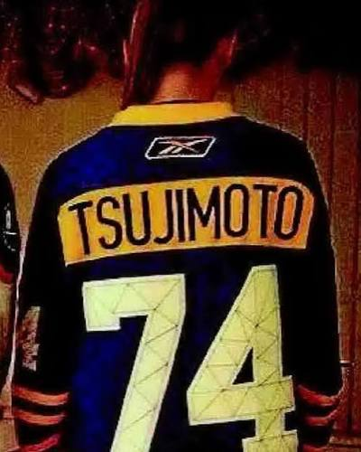

Taro Tsujimoto is a fictitious Japanese ice hockey player who was selected in the 1974 NHL amateur draft in the 11th round, 183rd overall, by the Buffalo Sabres. The decision to draft a non-existent player was made by Sabres general manager Punch Imlach, who was frustrated by the absurd length of the draft, and in the late rounds decided to have fun and draft someone unusual. Together with Sabres director of communications Paul Wieland, they created Taro Tsujimoto, a 20-year-old Japanese forward who played for the fictional Tokyo Katanas of the Japan Ice Hockey League. The name was inspired by Japanese American Joshua Tsujimoto, who owned a grocery store Wieland would regularly drive by. Taro Tsujimoto quickly became an inside joke for Sabres fans, and is a beloved figure in team history.
In 1971, the World Hockey Association (WHA) was founded, and began signing amateur players before the National Hockey League (NHL) could officially select them in the amateur draft. To counter the WHA, NHL president Clarence Campbell decided to conduct the 1974 draft in secret over a phone call instead of in person. This decision made the overall process painfully slow, as Campbell would call each team individually to tell them which previous players had already been selected before they could make their pick. The draft went on for 25 rounds, and took three days to complete. Punch Imlach, general manager of the Buffalo Sabres, was frustrated by the absurd length of the draft, and in the late rounds decided to have fun and draft someone unusual. He asked Sabres director of communications Paul Wieland to help create a fictitious player and their backstory. Imlach's 10th-round draft pick, Derek Smith, was the last player left in the draft pool that Imlach wanted; he felt that none of the remaining available players had any realistic chance of making the team.
Taro Tsujimoto was selected by the Buffalo Sabres in the 11th round of the 1974 amateur draft, as the 183rd overall pick. Campbell did not question the decision, and proceeded as normal. Due to the format of the secret draft, Campbell then had to call the other 17 teams' general managers and spell the name "Tsujimoto" for them, which he admitted was the greatest difficulty he faced during the entire draft. Imlach and Wieland decided to not inform any staff members of the ruse, including Sabres owners Seymour H. Knox III and Northrup R. Knox. Reporters were told only that Tsujimoto was "the most secret player in the secret draft".
Once the draft had concluded, various sports and news outlets published the list of players selected in the draft, a list that included Tsujimoto. Many journalists took an interest in Tsujimoto, as he would have been the first Japanese player to be drafted by an NHL team. As there was practically no NHL scouting in Asia in an era before the World Wide Web, there was no easy way to research whether the Katanas, let alone Tsujimoto, existed. As training camp approached, Tsujimoto was granted his own locker in the team's locker room and a jersey, number 13; when pressed upon where Tsujimoto was, Imlach demurred, stating that he was not sure whether Tsujimoto would come to the United States in time for the 1974–75 season but that the team would retain the player's rights if he did not. Imlach briefly considered bringing an actual Japanese man to pretend to be Tsujimoto but decided against it.Once Imlach confessed to the hoax, Campbell did not find it funny, and the NHL would eventually change the pick to an "invalid claim" for its official record-keeping purposes.
The Buffalo Sabres of the early 1970s had already become known for an irreverent approach to drafting players. In 1972, Imlach and Wieland announced that the Sabres were signing Mel Moonlight, said to be an experienced street hockey player who did not know how to skate on ice. Moonlight was later revealed to actually be Buffalo News reporter Lee Coppola moonlighting as a hockey player; Coppola did ultimately appear as a goalie in a pregame event. More seriously, in 1975 the Sabres attempted to draft Greg Neeld, who had lost an eye in an incident while playing for the Toronto Marlboros, despite an NHL rule that players must have sight in both eyes.
Tsujimoto quickly became an inside joke for Sabres fans, with many fans still wearing custom jerseys to this day. For years after the draft, Sabres fans at Buffalo Memorial Auditorium would hang banners stating "Taro Says..." followed by a witty comment against an opposing team or player, and would chant "We Want Taro" when games became one-sided. In 2011, Panini America created a Taro Tsujimoto hockey card, and included it within select box sets as a collector's item. In 2013, the New Era Cap Company sold Tokyo Katanas hats to commemorate the 40th anniversary of Tsujimoto's draft selection.[4] Wieland himself referenced the joke in his 2019 autobiography Taro Lives!: Confessions of the Sabres Hoaxer.
The Hockey News noted in a 2014 article that the Sabres could have opted for one of several potentially impactful players instead of wasting the selection on a joke. For instance, Dave Lumley was selected as the 199th pick by the Montreal Canadiens, Stefan Persson was selected as the 214th pick by the New York Islanders, and Warren Miller was selected as the 241st pick by the New York Rangers. Both Lumley and Persson contributed to multiple Stanley Cup-winning teams in the 1980s, while Miller played in 262 NHL games. The Athletic commented in 2024, in a piece commemorating the 50th anniversary of the hoax, that the Sabres might have drawn more scrutiny for the trick had they not already done well in the draft after selecting a class that included Smith, Lee Fogolin and Danny Gare; The Athletic also noted that the Sabres were not alone in their "wasting" of draft picks, as the expansion Kansas City Scouts and the California Golden Seals had both passed on using their respective eight and ninth round draft selections before the Sabres drafted Tsujimoto.